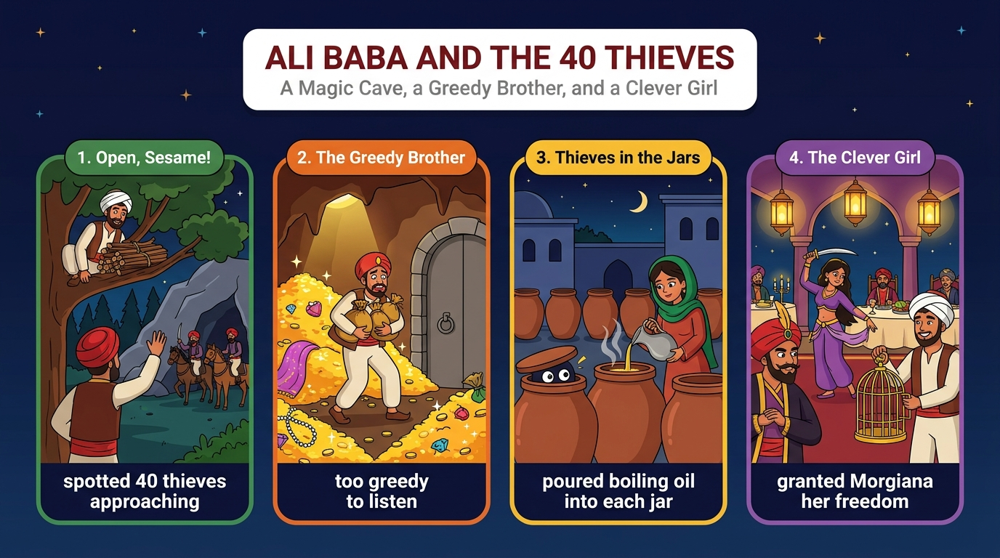

多數人認為阿里巴巴是主角，但也有讀者主張，身為女奴的摩吉娜更值得肯定。
deserves more credit阿里巴巴不貪心，只從洞穴拿了幾件珠寶和絲綢；他也警告過哥哥，只是卡辛固執不聽。
too stubborn to listen阿里巴巴從不敢親自面對盜賊；是摩吉娜發現油甕裡的危險、倒入滾油，並識破首領的偽裝。
It is Morgiana who spots the danger真正的英雄是在別人害怕時勇敢行動的人；依此標準，摩吉娜才是故事真正的英雄。
heroes can come from anywhereMany people (S) + think (V) + that 子句 (O)。
Many people think that（主句＋that）Ali Baba is the hero of the famous tale.（名詞子句）語塊 1（許多人認為）➔ 語塊 2（阿里巴巴是這個著名故事的英雄）
議論文開頭先陳述一般看法：「許多人認為」。
think，右邊 Ali Baba is the hero of the famous tale 完整 ➔ 名詞子句，可省略 that。
Many people think that ...hero：英雄；主角。some readers (S) + argue (V) + that 子句 (O)。
, who is only a slave, 非限定 who。
However, some readers argue that（轉折＋主句）Morgiana, who is only a slave,（子句主詞＋非限定 who）deserves more credit.（子句動詞）語塊 1（然而，也有讀者主張）➔ 語塊 2（身為女奴的摩吉娜）➔ 語塊 3（更值得肯定）
However 轉折，翻「然而，也有讀者主張」。
argue ➔ 名詞子句。Morgiana 是專有名詞，後面的 , who is only a slave, 是非限定補充；子句動詞是 deserves。
argue that：主張。deserve credit：值得肯定、應記一功。Ali Baba (S) + is (V) + not greedy (C)；分號後 he (S) + takes (V) + a few jewels and some silk (O)。
On the one hand, Ali Baba is not greedy;（正方＋子句一）he takes only a few jewels and some silk（子句二（例證））from the cave.（來源）語塊 1（一方面，阿里巴巴並不貪心）➔ 語塊 2 主詞（他）➔ 語塊 3（只從洞穴，提前）➔ 拿了幾件珠寶和一些絲綢
On the one hand 帶出正方：「一方面，阿里巴巴並不貪心」。
Ali Baba is not greedy，後面是例證 he takes only a few jewels ...，不需要連接詞。
It was late; we went home.a few＋可數複數／some＋可數或不可數。He (S) + warns (V) + his brother (O)；後接 although 子句。
He also warns his brother,（主句）although Cassim is too stubborn（although 讓步子句）to listen.（too ... to 的否定結果）語塊 1（他也警告過哥哥）➔ 語塊 2（只是卡辛太固執）➔ 語塊 3（不肯聽）
主句「他也警告過哥哥」先翻。
He also warns his brother 在前，although Cassim is too stubborn to listen 在後，表示「雖然警告了，可惜沒用」。although 前不需要 but。
too stubborn to listen＝so stubborn that he won't listen。stubborn：固執的。Ali Baba (S) + never dares (V) + to face the thieves (O)。
On the other hand,（反方轉折語）Ali Baba never dares to face the thieves（dare to V）himself.（反身代名詞（強調））語塊 1（另一方面）➔ 語塊 2 主詞（阿里巴巴從不敢）➔ 語塊 3（親自，提前）➔ 面對盜賊
On the other hand 翻「另一方面」，反方論點開始。
never dares to face：dare 有第三人稱 s，表示它是一般動詞，所以後面接 to V。若當助動詞會寫成 dare not face（不加 s）。
He dares to V.（一般動詞）／He dare not V.（助動詞）do it yourself。It is Morgiana who spots the danger ...（強調主詞 Morgiana）。
It is Morgiana who（強調句框架）spots the danger（被強調部分後的動作）hidden in the oil jars.（過去分詞片語）語塊 1（正是摩吉娜）➔ 語塊 2 動詞（發現了）➔ 語塊 3（藏在油甕裡的，提前）➔ 危險
這句用強調句，重點是「是摩吉娜」，我們用「正是」翻出來。
It is Morgiana who spots ...：把 It is 和 who 拿掉，剩下 Morgiana spots the danger ... 仍是完整句 ➔ 強調句，用來強調「是她，不是阿里巴巴」。hidden in the oil jars：過去分詞片語修飾 danger（＝which is hidden）。
It is / was + 強調部分 + who / that + 其餘。It is X who ...She (S) + pours (V) + boiling oil (O)；後接 before 子句。
She pours boiling oil into them（主句）before the leader can give his signal.（before 子句）語塊 2（搶在首領發出暗號之前，提前）➔ 語塊 1（她就把滾燙的油倒進甕裡）
這句重點是搶時間，before 子句先翻。
She pours boiling oil into them；before the leader can give his signal 是時間子句，them 指上一句的 oil jars。
pour A into B。give a signal：發出信號。she (S) + sees through (V) + his disguise (O)；前插 when 子句。
Later,（時間副詞）when the leader pretends to be a guest,（when 子句（pretend to V））she sees through his disguise.（主句）語塊 1（後來）➔ 語塊 2（首領假扮成賓客時）➔ 語塊 3（她識破了他的偽裝）
Later 先翻「後來」，接著 when 子句「首領假扮成賓客時」。
Later, when the leader pretends to be a guest, she sees through ...：Later 是副詞，when 子句是時間背景，主句是 she sees through his disguise。disguise 在這裡是名詞「偽裝」。
see through：看穿、識破。disguise（n./v.）：偽裝。a true hero (S) + is (V) + someone (C)。
who acts bravely 限定 who 子句；when 子句。
In my opinion,（立場片語）a true hero is someone（主幹）who acts bravely when others are afraid.（限定 who 子句＋when 子句）語塊 1（在我看來）➔ 語塊 2 主詞（真正的英雄是）➔ 語塊 3（在別人害怕時勇敢行動的，提前）➔ 人
In my opinion 先翻「在我看來」，這是作者立場。
someone（泛指），沒有逗號 ➔ 限定用法，定義「什麼樣的人」；who 子句內 when others are afraid 修飾 acts bravely。
A true friend is someone who ...In my opinion, 表立場，不再加 I think。Morgiana (S) + is (V) + the real hero (C)。
By that standard,（依據片語）Morgiana is the real hero（主幹）of the story.（of 片語）語塊 1（依此標準）➔ 語塊 2 主詞（摩吉娜才是）➔ 語塊 3（故事中，提前）➔ 真正的英雄
By that standard 承接上一句：「依此標準」。
By that standard 承接上一句的定義，表「依照那個標準」；主幹 Morgiana is the real hero of the story。
by that standard：依此標準。Her courage (S) + reminds (V) + us (O) + that 子句。
Her courage reminds us that（remind sb that）heroes can come from anywhere.（名詞子句）語塊 1（她的勇氣提醒我們）➔ 語塊 2（英雄可以來自任何地方）
主詞 Her courage 開頭：「她的勇氣提醒我們」。
reminds us that heroes can come from anywhere：us 是間接受詞，that 子句是直接受詞（名詞子句）。
remind sb that / of / to V。... reminds us that ...1. 請選出最適合填入 (1) 的字：
who。2. 請選出最適合填入 (2) 的字：
too + Adj. + to V。3. 請選出最適合填入 (3) 的字：
to V。4. 請選出最適合填入 (4) 的字：
It is + 人 + who + V。5. 請選出最適合填入 (5) 的字：
pretend to be：假扮成……6. The museum displays ancient ________ that once belonged to kings and queens.
jewels。7. He was so ________ that he ate the whole pizza without sharing.
greedy。8. The lifeguard ________ the swimmers not to go too far from the beach.
warn sb not to V。9. The coach blew a whistle as a ________ to start the game.
signal。10. 下列哪一句是強調句的正確寫法？
It is + 人 + who。11. 「真正的朋友是在你需要時幫助你的人。」最佳英譯是：
12. 下列哪一句文法正確？
13. What is the writer's main argument?
14. Which is a point in Ali Baba's favor?
15. How does the writer define a true hero?